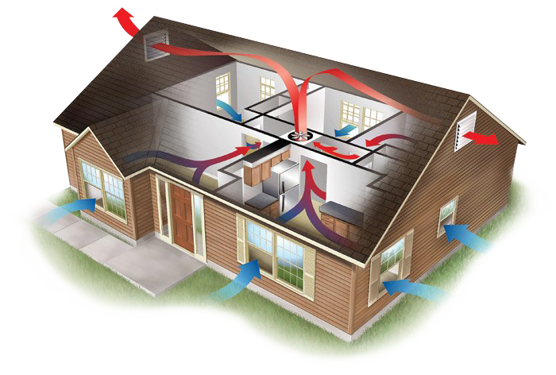
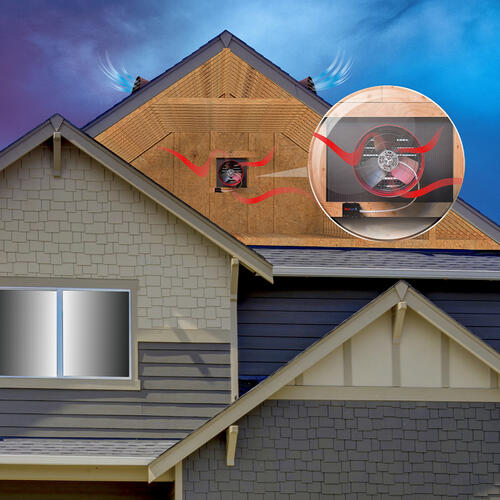

Smart Attic Fan
A smart attic fan that optimizes ventilation and contains a system for fan fault detection.
Our product is an esp32 chip that attaches to an attic fan that provides additional features. These features include: optimized fan speed switching for best air ventilation and a fault detection system. Any attic fan can wreak the benefits of our product that connects to our AWS server, stores data in a NoSQL Mongo database table, communicates with a neural network, and displays all data to the user via a beautiful Android phone application. Users are emailed and sent push notifications urgent information about their attic fan.
Motivation

Attic fans are extremely important for reducing house's
overall temperature (and in turn, air conditioning costs) and for improving
a home's air flow. When your attic fan breaks, your wallet will feel it in your
air conditioning bill. The life span of an attic fan
is between 5 and 15 years. The Smart Attic Fan will help you improve your
energy savings by regulating the attic's fan speed and by notifying you
via an application push notification as soon as your attic fan malfunctions.
Do you have to buy a new attic fan? NO! Smart Attic Fan attaches to your current
attic fan!
Attics are not uncommon in the United States. On the contrary, it is common that
attics are neglected as they are an uninhabitable area of a home.
But it is extremely important to keep an eye on the attic's ventilation and
insulation. The consequences of ignoring one’s attic could be quite damaging.
According to B. R. Stewart, an Agricultural Engineer at Texas A&M University,
there exists two main reasons why ventilation is so important in a home’s attic.
During the summer, heat builds up in the attic during the day which only results
in additional energy costs to cool the entire house. Second, moisture produced
within the home may move into the attic which can condense and cause construction
materials to deteriorate if the moisture is not removed efficiently. An innocent
Summer day can be 95 degrees outside, which will bake your attic up to
temperatures near 160 degrees fahrenheit!
(Read B. R. Stewart's report here).

System
Remember to use combination of descriptions, photos, and figures
Architecture
Blah blah blah
Technical Components
Blah blah blah
Prototype
Blah blah blah
Results
Remember to use figures to help illustrate results
Contact
Yin Zhang: yz4053@columbia.edu
Mark Ozdemir: mo2804@columbia.edu
James Mastran: jam2454@columbia.edu
Columbia University Department of Electrical Engineering
Instructor: Professsor Xiaofan (Fred) Jiang